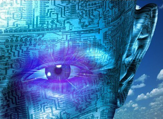

Peradaban Insan dan Teknologi
Topik pembahasan di zaman modern ini adalah hubungan manusia dengan teknologi yang seakan-akan tidak bisa dipisahkan dari segala bentuk kegiatan. Sehingga pada saat ini, bisa dibilang teknologi menjadi kebutuhan primer yang harus dipenuhi bagi setiap orang.
Fungsi teknologi itu sendiri adalah untuk mempermudah manusia dalam mengerjakan segala kegiatan, kebutuhan serta kepentingannya. Misalnya dalam berkomunikasi, seolah-olah jarak manusia di penjuru dunia itu dekat. Padahal pada zaman dahulu, saat segalanya masih sangat sederhana, hal seperti ini tidak mungkin bisa dirasakan. Karena pada zaman dahulu, ini dianggap sebagai sesuatu yang tidak masuk akal.
Semua ini sebenarnya berawal dari kebutuhan manusia yang beraneka macam. Serta keinginan dan rasa yang tidak pernah puas akan sesuatu yang seperti ini itu dan yang lebih dari ini dan itu. Sehingga menjadi salah satu alasan manusia untuk menciptakan teknologi-teknologi baru. Yang dapat menjadikan segala keperluan dan kebutuhan menjadi serba cepat, mudah dan praktis.
Namun fenomena yang terjadi saat ini adalah, teknologi cenderung digunakan tidak untuk kebutuhan maupun keperluan, melainkan sebagai tren hidup. Untuk sekedar ikut-ikutan agar tidak dianggap sebagai manusia zaman batu yang sangat kuno. Tanpa memanfaatkan kecanggihan teknologi itu dengan baik. Di luar kesadarannya, manusia sedikit demi sedikit dijajah seiring berkembangnya teknologi. Terutama teknologi alat komunikasi, misal Gadget dan sejenisnya.
Bisa dikatakan hubungan manusia dengan teknologi, seperti halnya simbiosis parasitisme. Tergantung manusia itu sendiri, menjadi pihak yang menguasai, agar menuntut dirinya untuk belajar dan memanfaatkan teknologi dengan bijak sehingga dapat memperoleh nilai positifnya.
Namun disisi lain, tidak sedikit manusia yang menyalah gunakannya. Misalnya orang tua zaman sekarang membelikan Gadget untuk anak-anaknya yang bisa dikatakan belum cukup dewasa. Dengan alasan mengikuti tren zaman sekarang. Sedangkan anak belum bisa memanfaatkan Gadget dengan baik dan sesuai kebutuhan. Melainkan mereka hanya menggunakannya untuk bermain Game. Mari kita bandingkan dengan zaman ketika kita kecil dulu. Kita bermain diluar rumah, memainkan permainan yang sangat sederhana dan dengan alat yang sederhana pula. Seperti bermain kelereng, lompat tali,petak umpet dan masih banyak lagi. Tapi lihatlah zaman sekarang, mereka banyak bermain game ditablet di dalam rumah tanpa menghiraukan waktu bahkan mereka hanya pergi ke warnet untuk bermain game online. Saat mereka sibuk dengan keasyikannya, orang tua tidak menyadari bahwa hal tersebut akan dapat membuang waktu yang seharusnya dipergunakan untuk belajar. Yang nantinya dapat menghambat dan menurunkan prestasi anak di bidang akademik maupun non akademik. Sehingga dari situlah gambaran manusia yang mendapat nilai negatif dari perkaembangan teknologi saat ini.
Maka dari itu kita harus waspada, jangan sampai menyalagunakan teknologi untuk hal-hal yang tidak ada gunanya. Memang kita sadari bahwa manusia dan teknologi tidak akan bisa dipisahkan. Meski ada dua kemungkinan yang telah dibahas diatas. Teringat salah satu Hadits :
عن أمير المؤمنين أبي حفص عمر بن الخطاب رضي الله عنه قال سمعت رسول الله صلى الله عليه وسلم يقول ” إنما الأعمال بالنيات , وإنما لكل امرئ ما نوى , فمن كانت هجرته إلى الله ورسوله فهجرته إلى الله ورسوله , ومن كانت هجرته إلى دنيا يصيبها و امرأة ينكحها فهجرته إلى ما هاجر إليه “- متفق عليه –
Dari Amirul Mukminin Abu Hafsh, Umar bin Al-Khathab radhiyallahu ‘anhu, ia berkata : “Aku mendengar Rasulullah shallallahu ‘alaihi wa sallam bersabda: “Segala amal itu tergantung niatnya, dan setiap orang hanya mendapatkan sesuai niatnya. Maka barang siapa yang hijrahnya kepada Allah dan Rasul-Nya, maka hijrahnya itu kepada Allah dan Rasul-Nya. Barang siapa yang hijrahnya itu Karena kesenangan dunia atau karena seorang wanita yang akan dikawininya, maka hijrahnya itu kepada apa yang ditujunya”
Meski sebenarnya teknologi itu sangat berguna untuk memudahkan manusia dalam kepentingannya, tapi bisa menjadi sangat merugikan jika dari awal kita sudah salah menggunakannya.
Satu kenyataan yang tidak bisa kita hindari yakni manusia akan tetap membutuhkan teknologi yang dapat mempermudah segalanya. Teknologi akan terus berkembang merubah peradaban di dunia menjadi lebih maju dari era yang kita alami sekarang. Bahkan mungkin kelak di zaman yang akan datang, banyak penemuan-penemuan teknologi baru yang tidak hanya cukup menggugah manusia untuk mengatakan “HEBAT..!!”, melainkan lebih dari itu. Sehingga segala sesuatu yang saat ini tidak bisa dilakukan, mungkin saja dapat kita lakukan dengan penemuan teknologi yang lebih canggih suatu saat nanti.[ZR]